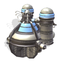

Hydroponic farm
Hydroponic farms are colony facilities in which plants are grown using
mineral nutrient solutions, in water, without soil. Normally, soil
itself is not required for plant growth, it only acts as a mineral
nutrient container for plant roots to absorb them. It is possible for
a plant to thrive only in water as long as the necessary mineral
nutrients exist in the water supply.
Even after terraforming and introduction of liquid water, Martian
soil is not much suitable for growing plants because of its chemical
structure. Building improvements like irrigation on this terrain need
long periods of time and expensive work. Because of this, hydroponic
farms are an important addition to colony's food supply.
